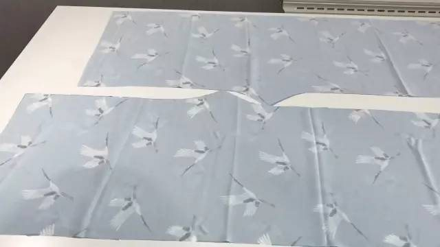

最具时尚感的汉服形制—宋裤的制作教程
在手工娘心里，最具时尚感的 汉服形制就是宋裤，可以把人体线条拉高拉长，除了能显高显瘦，还自带飘逸风流的效果。
完全能够满足现代人的工作生活状态，不瞒大家说，我经常用宋裤搭配衬衫穿来上班，虽然是混搭但完全没有混搭感，因为它真的太时髦了~
近两年大热的阔腿裤，想必姑娘们已经人手一条了，其实在千年以前，我们的先人就已经在引流这股风尚。
大家都知道传统宋裤开裆，现代汉服商家们为了穿着方便，大多进行了再创造，不论是松紧带还是系带款，我们都可以称之为汉元素宋裤。
今天是二午仙女给大家带来的一款教程：超级显瘦又时尚的汉元素裤子，经过汉服娘亲自试验，无论是搭配汉服还是时装，既古典又时尚，百搭实用~
流行元素△近几年流行的裤子，我想你的衣柜里多少会有几条吧！
平面折叠的款式，看起来简单随意，折叠的部分能遮小肚子遮大腿，适合大部分女性的身材。
平面折叠的款式，看起来简单随意，折叠的部分能遮小肚子遮大腿，适合大部分女性的身材。
△这种腰部很多碎褶的裙子、裤子，声称用料3米5米，走路带风，自带仙气……实际上很显胖！
尤其是腰部堆积的褶子，能瞬间把你的腰围增大一个尺寸，下半身从腰到脚踝都爆炸了！最主要是不干净利落，一点也不高级。
尤其是腰部堆积的褶子，能瞬间把你的腰围增大一个尺寸，下半身从腰到脚踝都爆炸了！最主要是不干净利落，一点也不高级。宋人打架现场，在那个时代，裤子是内衣呢。
△放大看，腰部非常肥，裆部很多褶皱，说明穿着的时候裤腰的松量全部集中在裆部了。
△感谢笙歌落尽提供的图。这是汉服裤子，裤腿内侧加了一条加宽条，当时并不知道这是做什么用的，但是做裤子的时候居然用到了。
△感谢笙歌落尽提供的图。这是汉服裤子，裤腿内侧加了一条加宽条，当时并不知道这是做什么用的，但是做裤子的时候居然用到了。
制版非要做一条现代版的裤子，没有加加宽条。做的时候发现白色的面料不够用，剪出来的裤腿太窄，没有办法，裤腿内侧的，裆部的，两种加宽条都加了。
制作两小块面料。
先在蓝色面料上画出版。
沿线剪下。
两条裤腿是这样的，裆部的尖尖错开，这样能省布。由于面料实在不够，即使这样还是达不到设计宽度，所以加了裆部的加宽条。
白色的内层裤子，面料更窄，因此，本应该前后片分开的，我裁的时候做成侧缝不裁开的，这样子前后各省了1cm。

剪下来。

缝合。
白色内层裤子有裤腿内侧加宽条和裆部加宽条。
蓝色外层裤子裤腿比较宽，所以只有裆部加宽条。
二合一。这时候我发现白色裤子单穿也是可以的，蓝白两层缝在一起就没办法单穿啦，所以准备做出两条来。
剪腰头。
对折熨平。
前腰60cm，后腰40cm，裤腰多余的量做成小褶
缝腰头。
白色内层我做了两个暗扣，蓝色外层除了两个暗扣还有一对系带。
出去耍吧